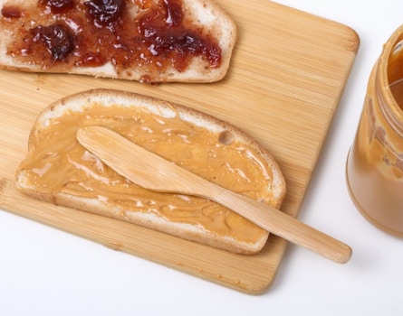

Cinnamon Sugar Toast PB&J

Photo by Giorgio Trovato on Unsplash
Description
A smooth, sweet, creamy, crunchy, sugary treat.
Ingredients
- 2 slices bread
- 2 tbsp butter
- 2 tbsp granulated sugar
- 1 tsp ground cinnamon
- 2 tbsp peanut butter
2 tbsp raspberry jam
- In a small bowl, combine granulated sugar and ground cinnamon.
- Toast the bread.
- Butter one side of each of the bread slices and sprinkle generously with cinnamon sugar mixture.
- Spread peanut butter and jelly on the inside of each of the bread slices.
- Make a sandwich and cut in half. Serve immediately.
Recipe credit:Two Peas and Their Pod